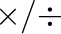

Grouping gives the capability to create reusable modules, or subroutines that can dramatically simplify more complicated systems. Groups may be created in the following ways:
Groups may be nested heirarchically, which gives an excellent way of zooming in to see the detail of a model, or zooming out to get an overview of it. The group context menu item ``Zoom to display'' zooms the canvas in just enough for the group's contents to be visible.
You may also select ``Open in canvas'' from the context menu. This replaces the current canvas contents with the contents of the group, allowing you to edit the contents of the group directly without the distractions of the rest of the model. Select ``Open master group'' to return to the top level group occupying the canvas.
Around the edges of a group are input or output variables, which allow one to parameterise the group. One can drag a variable and dock it in the I/O area to create a new input or output for the group.
When creating a group, or dragging a variable or operation into or out of a group, if a wire ends up crossing the group boundary, a new temporary variable is added as an I/O variable. You may then edit the I/O variable name to be something more meaningful to your model.
Variable names within groups can be locally scoped to that group. That means that a variable of the same name outside the group refers to a different entity completely. By default, grouped variables refer to entities outside the group scope, but may be marked local by means of context menu option. One can also convert all variables in a group to be local by means of the ``Make subroutine'' context menu entry.
Nonlocal variables refers to a local variable within an outer scope, going all the way to global scope if no such variable exists. In this way, two groups can share a variable reference to a variable, and you can limit the scope of the shared variable by placing a local variable of the same name in an outer group that both groups are contain within.
A group can also be exported to a file from the context menu. This allows you to build up a library of building blocks. There is a github project ``minsky-models'' allowing people to publish their building blocks and models for others to use. In the future, we hope to integrate Minsky with this github repository, allowing even more seamless sharing of models.